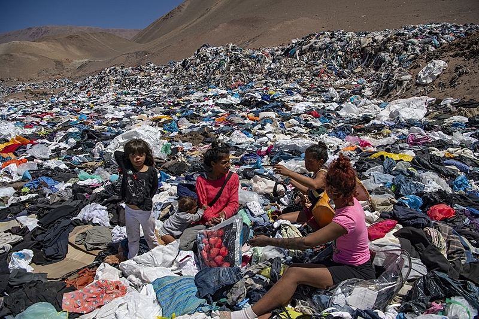

Por trás da MODA MUNDIAL há:
- Descarte incorreto
- Poluição nos rios
- Formação de aterros gigantescos
- Contaminaçãao do solo

2022 foram compradas 6,3 bilhões de peças de roupa. Porém, sem investimento em pesquisa ou incentivos do governo e sem uma política sólida de gestão de resíduos, a estimativa é que essas compras resultaram em: 192 mil toneladas de lixo têxtil